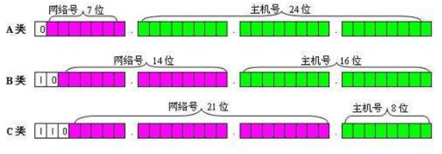

IP地址
IP地址
1.IP地址：
IP地址就是给每个连接在Internet上的主机分配的一个32bit地址。通常用点分十进制表示法。
2.子网掩码：
子网掩码就是判断两个IP地址，是不是在同一个网段(或称子网)，在同一网段的两个地址，可以直接通信。
它指明一个IP地址的哪些位标识的是主机所在的子网以及哪些位标识的是主机的位掩码。
子网掩码不能单独存在，它必须结合IP地址一起使用。子网掩码只有一个作用，就是将某个IP地址划分成网络地址和主机地址两部分。

3.网关
网关(Gateway)又称网间连接器、协议转换器。网关就是一个网络连接到另一个网络的“关口”。也就是网络关卡。
所有网络都有一个边界，限制与直接连接到它的设备的通信。因此，如果网络想要与该边界之外的设备，节点或网络通信，则它们需要网关的功能。网关通常被表征为路由器和调制解调器的组合。
路由：是指分组从源到目的地时，决定端到端路径的网络范围的进程
网关在网络边缘实现，并管理从该网络内部或外部定向的所有数据。当一个网络想要与另一个网络通信时，数据包将传递到网关，然后通过最有效的路径路由到目的地。除路由数据外，网关还将存储有关主机网络内部路径的信息以及遇到的任何其他网络的路径。
3.1网关地址
一般默认最低位为1的地址为网关地址，比如192.168.123.1、192.168.44.1
All articles on this blog are licensed under CC BY-NC-SA 4.0 unless otherwise stated.